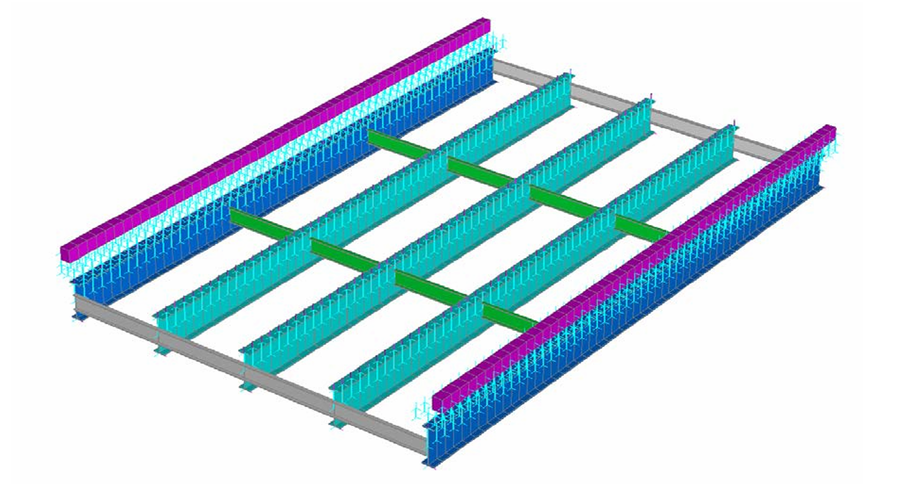
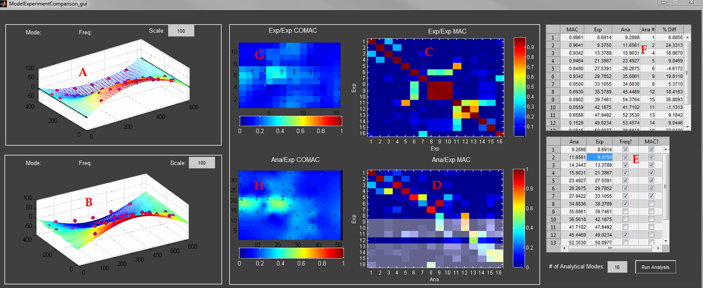
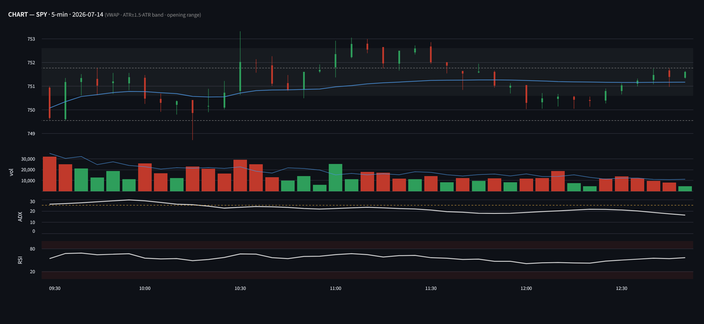

I'm a structural engineer by training who came to product management through building
software for other engineers. This is a running log of things I make — a
research code base from my doctoral work, a game built
to explore what was possible with Claude Code, and a market observation tool
built to sharpen intuition. Each started as a question I could only answer by building it.
Rapid Automated Modeling for the Performance of Structures

A complete 3D FE bridge model, generated parametrically through the Strand7 API.
MATLAB software that builds and load-rates finite-element models of highway bridges by
driving the Strand7 solver through its API — generating the 3D model, running
simulated dead- and live-load tests, and computing rating factors with no manual modeling.
There's a second module that streamlines and automates the model-tuning step —
"Structural Identification" — by comparing the natural frequencies and mode shapes
of the model against a forced-vibration experiment. The software controls Strand7 to run
a modal analysis, then uses another non-linear optimization solver in MATLAB to update
model parameters — bearing stiffness, deck-to-girder composite action — so
the model behaves more like the real structure.

Parameter correlation: analytical vs. experimental mode shapes and MAC values.
Third, there's an automated girder-sizing module — "design" without the human
intuition and heuristics — using AASHTO LRFD and ASD standards. There's a 2D FE
solver I built that runs the calcs, and a non-linear optimization algorithm that finds
the smallest girder by material volume that still meets the design specs.
Built during my doctoral research at Drexel and matured at Rutgers as the software
companion to the THMPR rapid-testing system (European patent; ASCE Pankow Award).
Why I made it: automate the model-building loop, automate
the model-tuning loop, automate the design-and-load-rating loop. All together, I was able
to say some impactful things about bridge design and the difference between reality and
simulation. In the end, it comes down to "all models are wrong, some are useful." It's
archived here as written — the interesting part is what it does, not how pretty it is.
On-rails cave flyer with a morph-weapon core mechanic
Self-playing demo: morphing to match each wave across five environments.
You auto-fly forward through cavernous environments, dodging and aiming with the stick
while reshaping your weapon's spread — orb, horizontal disk, vertical disk —
to match the enemy formation in front of you. Match the shape and the formation melts and
bonuses stack; mismatch it and you only chip away at enemies.
There's a handful of environments to play with that I had fun making after exploring
the morph-and-shoot mechanic. By the end of the prototype phase I started to investigate
syncing the procedurally-generated environment to music. More to come on that in the next
update.
Side note: play with an Xbox controller linked to your PC
over a cable or Bluetooth — it's way more fun.
Why I made it: initially, to explore the initial idea
— that a two-layer "aim and morph" gameplay loop could carry a shooter.
I'd be remiss if I didn't mention my wife reminded me while writing this blog post that
Dead Space used exactly this vertical/horizontal weapon morph in an FPS package.
Environments and enemies are the real test, and I'll need to hammer on those to see if
this can be really fun. This repo is the runnable vertical slice from that prototyping
phase. Did I prove out the idea?
Regime context up top, the SPY / QQQ / IWM grid, and the per-ticker “why” drawer that spells out each gate.
A calibration and observation tool for intraday equity metrics (SPY / QQQ / IWM) against
an Alpaca paper account and free FRED data — no orders, no positions.
An engine process owns all the data I/O and metric math and writes a permanent calibration
log to SQLite; a thin Streamlit UI just reads and renders, and always flags when the last
data pull happened.
In development now: the action layer — a
per-ticker entry trigger, an on-deck trade setup, and armed/triggered states that show how
it'll look when a tradable position is armed and ready. The shipped v1 is the read-only
observation grid; the action layer is what I'm building toward next.
Why I made it: I wanted to watch how regime signals behave
through a live session and build intuition before ever risking a dollar. Ships as a
two-process Docker stack. Next step? Training a trading algorithm.

The focused ticker’s 5-min chart: VWAP, ATR± band, and opening range, with volume, ADX, and RSI panes below.